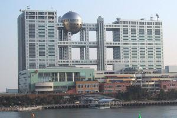
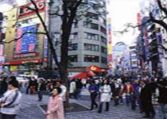
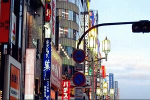
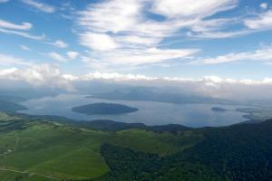
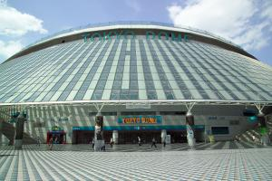
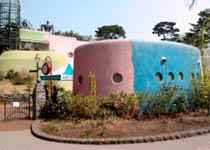

我的旅游
- 
株式会社富士电视
株式会社富士电视（日语：株式会社フジテレビジョン，英语译名：Fuji Television Network, Inc.），一般称为“富士电视台”（フジテレビ），简称“CX”（源自其识别呼号JOCX-DTV），为日本一间以关东地方为主要播放区域的电视台，为日本五大电视联播网的核心台之一。
- 
池袋
池袋（日语：池袋，いけぶくろ）是日本东京丰岛区的一个区域，也是东京市区中一个主要的商业及娱乐地区。池袋有多家大型百货公司据点，及东京主要车站之一的池袋站，亦是丰岛区役所（区政府）所在地。池袋与新宿、涩谷并立为山之手三大副都心之一。
- 
涩谷
涩谷（日语：渋谷；罗马拼音：Shibuya；英语：Shibuya）全称涩谷区（Shibuya-ku），日本地名，位于日本东京都，是东京都特别行政区之一。该行政区总面积约15.11km，209,796人（2012年12月1日），当地有著名的忠犬八公铜像。
- 
屈斜路湖
屈斜路湖是日本面积第六大湖泊，平均水深为28.4m米，位于破火山口屈斜路破火山口内，周围被藻琴山、サマッカリヌプリ等山峰环绕，东西宽约29公里，南北长约20公里，是日本最大的火山口湖，也是世界第二大的火山口湖。虽然屈斜路湖属于水深较浅的火山口湖，但东南部的旧喷火口一带的最深处水深接近120米。
- 
东京巨蛋
东京巨蛋（日语：東京ドーム，英语：Tokyo Dome）位于日本东京文京区，是一座有45,000个座位的多功能体育馆，也是日本第一座巨蛋型球场。同时是日本职棒读卖巨人的主场，曾经举办过篮球与美式足球比赛，还有职业摔角、综合武术、K-1赛事或音乐表演。
- 
三鹰之森吉卜力
三鹰之森吉卜力美术馆位于东京三鹰市井之头恩赐公园内，2001年10月开馆，投资约50亿日元兴建，占地面积约4000平方米。由日本动画大师宫崎骏亲自设计，宫崎骏的儿子宫崎吾朗担任监理和第一任馆长。